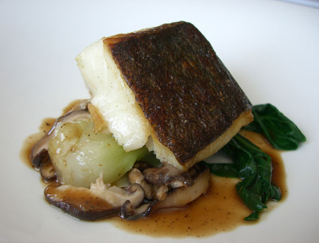

|
| Home Menu Directions Contact About Us |
|
Due to the surge of COVID-19 and the financial difficulties of operating under current restrictions, we have decided to shut down for the winter. We greatly appreciate all of the incredible support from our wonderful community and look forward to reopening on Thursday, March 18thIn the meantime, we encourage everybody to support all of your local restaurants as much as possible to help them get through these difficult times. ~ The Terrapin Creek Family |
 |
| 1580 Eastshore Rd., Bodega Bay, CA 94923 [map] | Tel: 707.875.2700 |